“Hangt boven onze bank en iedereen die binnenkomt begint erover. Papier voelt stevig, kleuren zijn diep.”
Sanne uit Eindhoven
F*ck Pearls poster2+1 gratis op alles, zonder code Gratis verzending vanaf €50 in NL en BE In huis binnen 3 tot 4 werkdagen
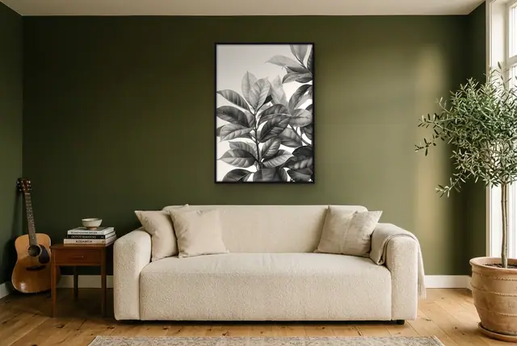
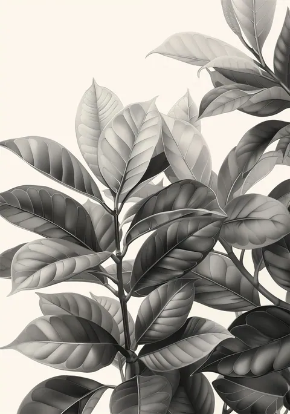
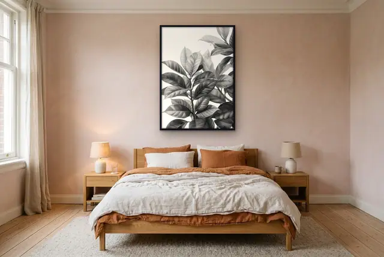
Zo groot is hij aan je muur
Wel de botanische rust, niet het wekelijkse water geven.
€ 29,99 incl. btw, zonder lijst
2+1 gratis. Doe er nog 2 bij en de goedkoopste is van ons. Zonder code.
Grote, volle bladeren van de rubberplant vullen het beeld in zachte grijstinten. De gedetailleerde nerven en strakke schaduwen geven deze botanische illustratie diepte, terwijl de lichte achtergrond het geheel fris houdt. Een rustige blikvanger die natuur naar binnen haalt zonder schreeuwerig groen.
Deze print hangt uitstekend in de slaapkamer of boven de bank in de woonkamer. Combineer hem met een houten lijst voor warmte, of kies zwart voor een modern grafisch contrast.
Staat heel mooi bij lichte houten meubels of naast minimalistische lijntekeningen.
★★★★★ 4.7 van 5 · 6 reviews
Voorbeeld: hier komen straks echte reviews van klanten (via Kiyoh)
“Hangt boven onze bank en iedereen die binnenkomt begint erover. Papier voelt stevig, kleuren zijn diep.”
Sanne uit Eindhoven
F*ck Pearls poster“Met de muurplanner eerst op een foto van mijn eigen muur gezet. Precies zo hangt hij nu.”
Mark uit Helmond
 Tijger portret poster
Tijger portret poster“Lief voor de babykamer. Binnen drie werkdagen in huis, netjes in een koker.”
Lotte uit Utrecht
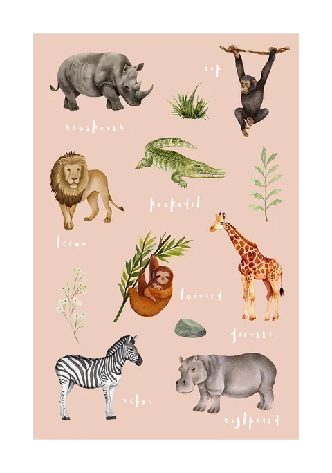
Safari dieren poster“Drie besteld voor een fotowand, de derde was gratis. Ziet er echt uit als een galerie.”
Youssef uit Antwerpen
 Meisje met kauwgom poster
Meisje met kauwgom poster“Zwart-wit, strak en betaalbaar. Paste meteen in een standaard lijst van 50x70.”
Ilse uit Nijmegen
 New York straat poster
New York straat poster“Lachen elke ochtend bij het koffiezetten. Levering duurde een dag langer dan gedacht, verder top.”
Tom uit Breda
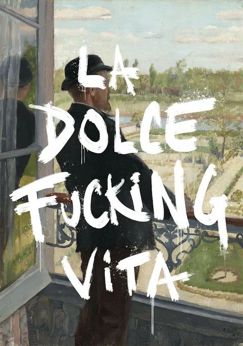
La Dolce F*cking Vita posterZelfde sfeer, zelfde stijl. Handig voor een duo of trio.
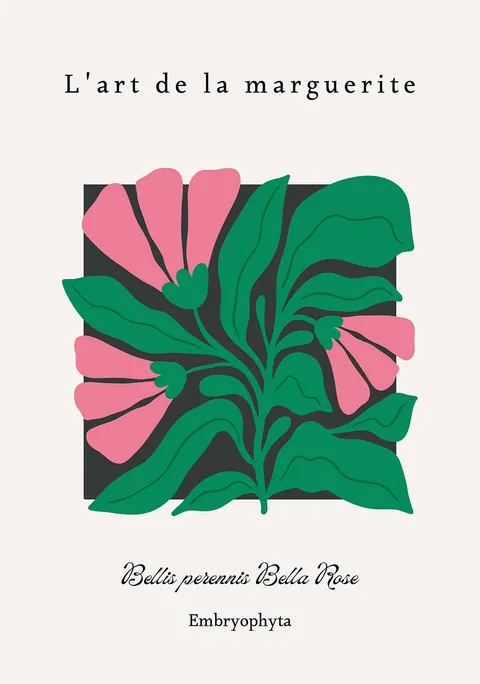
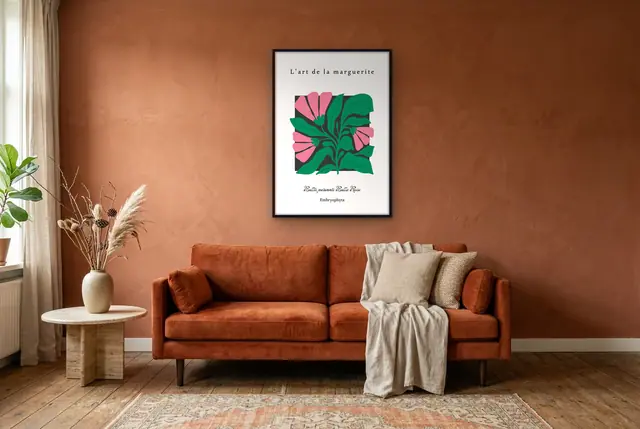
vanaf € 14,99
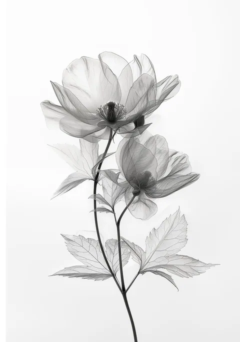
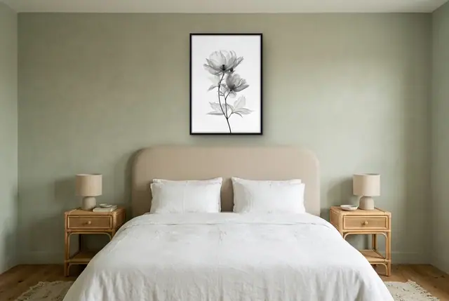
vanaf € 14,99
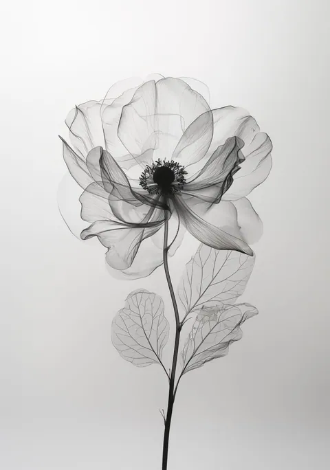
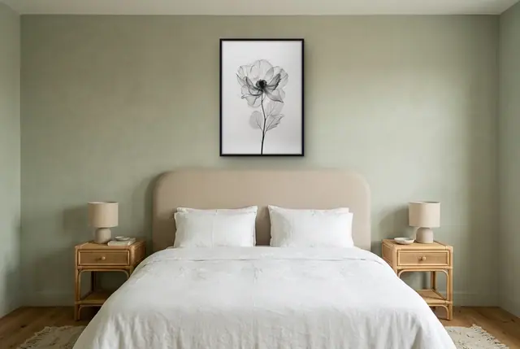
vanaf € 14,99
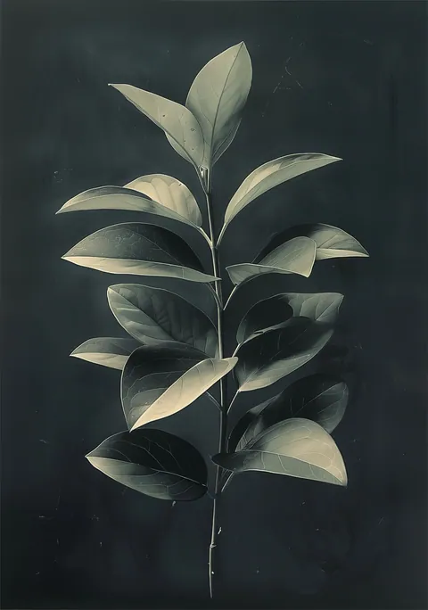
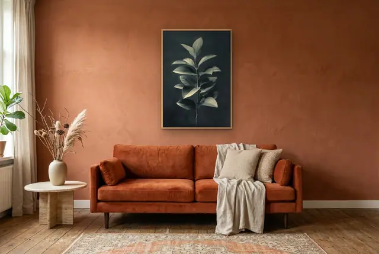
vanaf € 14,99
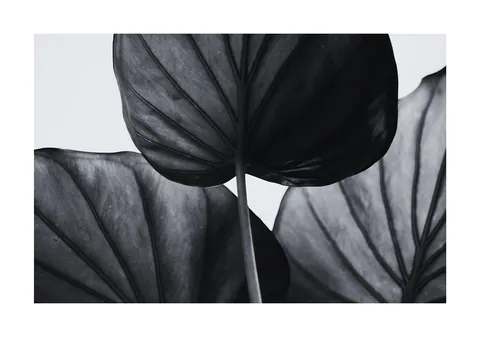
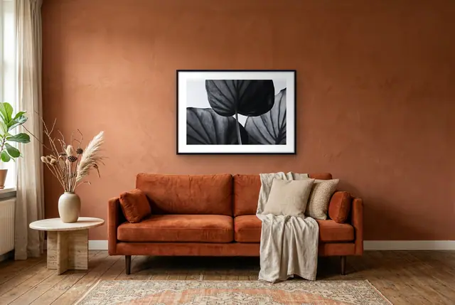
vanaf € 14,99
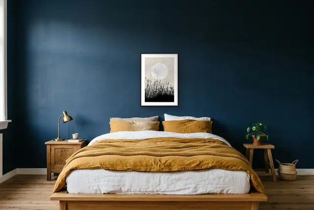
vanaf € 14,99
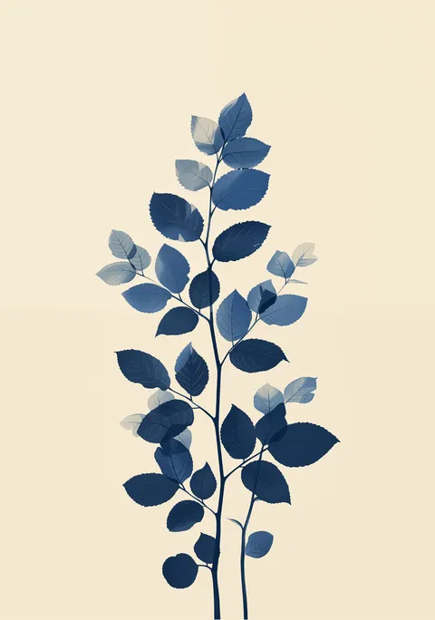
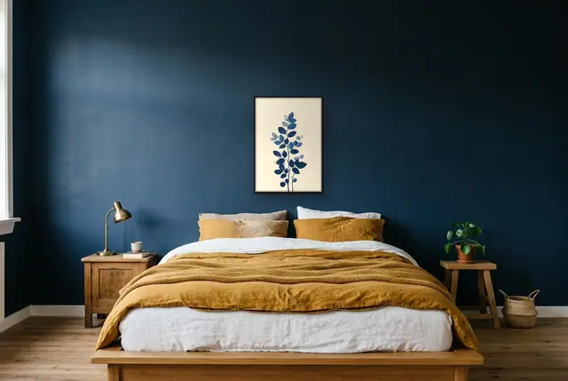
vanaf € 14,99
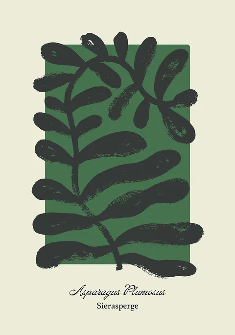
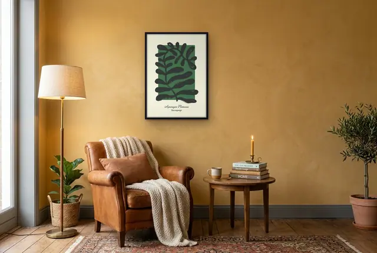
vanaf € 14,99
Binnen 3 tot 4 werkdagen. We drukken elke poster op bestelling, daarna gaat hij met PostNL of DHL naar je toe. Je krijgt een track-and-trace per mail.
Doe drie posters in je winkelwagen en de goedkoopste is gratis. Bij zes posters zijn er twee gratis, enzovoort. Je hoeft geen code in te vullen, de korting staat er vanzelf.
Nee, je krijgt de poster zonder lijst. Al onze formaten passen in standaard lijsten. In de gids 'Welke lijst past bij mijn poster' lees je welke maat je nodig hebt.
Ja, je hebt 14 dagen bedenktijd, vanaf de dag dat je de poster ontvangt. Meld je retour via info@leukeposters.nl en stuur de poster onbeschadigd terug. De retourkosten zijn voor jou. Je geld krijg je binnen 14 dagen terug. Posters op maat kun je niet retourneren, want die drukken we speciaal voor jou.
Scroll of knijp om in te zoomen, sleep om te bewegen
Nieuwsbrief
Meld je aan en krijg 10% welkomstkorting. Elke maand loten we onder alle aanmelders de prijs van de maand: 3 posters naar keuze in 50x70. Plus tips en nieuwe posters, ongeveer één keer per maand.
Hoi, ik ben Pim! Zal ik je helpen een poster te kiezen?
PimJe posterhulp. Vraag maar raak.